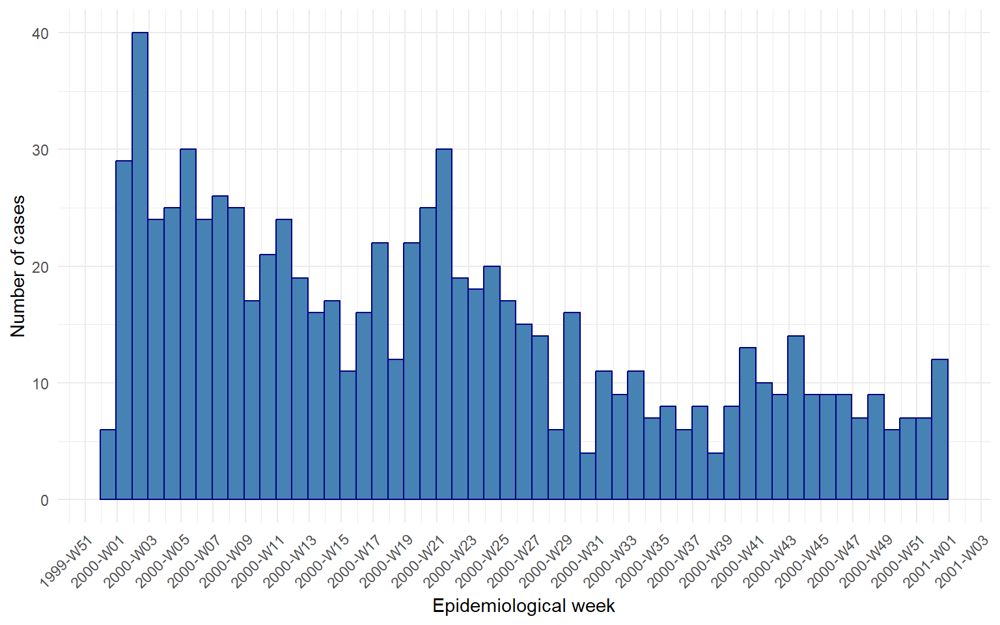

tibble(
key_date = as.Date(c("1999-12-31", "2000-01-01", "2000-01-02")),
year = year(key_date),
isoyear = isoyear(key_date),
isoweek = isoweek(key_date),
week = week(key_date)
)Histograms for Epicurves
Session 5 practical exercises
Kassandra’s report has one section left. She wants to zoom-in on the peak year of cases, 2000, to understand its trend and look for relevant changes there. We saw that in the tables produced in Session 4. She needs an epicurve of weekly cases for the year 2000.
Continue in your Session 5 script, where your data and libraries are already loaded. We are adding one new package today, aweek, just for a small comparison later on.
Part 10 · Epicurves: where time is the protagonist
Every plot so far has counted something categorical — a serogroup, a sex, a year or month. Today the categories do not exist yet. You have one raw date per case, and from there we need to build our own bins. In the previous exercise, we used floor_date() to get months categories with dates for the line plots.
An epicurve is tipically focused around a short period of time: days or weeks (outbreaks), weeks or months (long outbreaks, epi seasons) or a year (surveillance). And usually, even lengthy series with months or years of data get grouped around epidemiological weeks. This level of granularity implies other aspects in terms of grouping and manipulating dates.
Let’s start by exploring the different aspects of weeks.
From weeks to epiweeks
Action — Create a new dataset with only cases from the year 2000, name it imd_2000.
Action — Create a histogram of cases using key_date as x variable, without any further argument
It works, no error this time — but why does a date happily sit on a continuous axis and get chopped into bins at all? Because underneath, a date is a number: the count of days since 1970-01-01. So whatever binwidth you set with a date variable, you are setting it in days.
You will also notice a console message, something like stat_bin() using bins = 30. Pick better value with binwidth. R is telling you that the width of the bin is your decision, not its.
NoteR being honest with you (again)
geom_histogram() has to draw something even if you never tell it how wide a bin should be, so it silently picks 30 equal-width bins across your data and warns you about it. Thirty is not a magic number that fits every dataset — it is a placeholder, and the message is R’s way of refusing to let that placeholder pass unnoticed.
Action — Try binwidth = 1, then 7, then 30. Watch how the same cases tell a completely different story depending on the width you choose.
Which week is it, exactly?
binwidth = 7 finally starts looking like a real epidemic curve — one bar per week. But which day did R choose to start counting from? In binwidth = 7 what happens with 31-days months, or February? R picks the origin of the first bin on its own, silently, without any actual calendar or epidemiological criteria.
lubridate is our date package. Period. But within it, many options are available. And we have several candidate functions for getting the job done: year() and week() together with isoyear() and isoweek(). So what is the difference?
When working in epiweeks, the usual label we see is “2000-W01” meaning first epiweek of the year 2000. Should be easy, right?
Action — In your imd_2000 data, add a mutate to create the year isoyear, week and isoweek variables using the lubridate functions.
Action — Open the viewer, arrange the data by key_date and check the newly created columns.
Action — Run this small comparison and look closely at the columns:
All three dates share the exact same isoweek, 52 — they are the same ISO week, spanning the turn of the year. But year() reads the calendar year printed on the date, so two of these rows say “2000” while isoyear() correctly keeps all three in 1999, the year that ISO week 52 actually belongs to. The same happens with isoweek() and week().
NoteR being honest with you, calendar edition
Pair isoweek() with the wrong year function and you invent a “2000-W52” that never happened, while the real ISO week 52 gets torn into two pieces — a few cases wrongly reported under next year’s week 1. This is not a hypothetical: it is one of the most common labelling errors in published outbreak reports.
CautionIf the function
epiweek() exist, why not use it?
lubridate::epiweek() looks like the obvious shortcut, but it follows the MMWR/CDC definition (weeks start on Sunday), not the ISO definition (weeks start on Monday) that EPIET and ECDC use. Same dates, different week numbers. Always isoweek() here.
The right epiweek label
Now that you know why the year matters, let’s fix the x axis itself. isoweek() produced only an ordered sequence of numbers that we could use as a continuous scale, right? But dates enable many more customizing options, so how do we keep the best of both?
floor_date() — already familiar from the previous exercise — takes a unit = "week" argument, and with week_start = 1 it rounds every date down to the Monday that starts its week. A real date, ready to sit on a continuous axis, gaps and all. It’s the same logic of how isoweeks are defined, to begin with.
Action — Create a week_date variable in imd_2000 using floor_date() with the appropriate arguments. Does week_date and isoweek match 100%? how would you check that?
CautionA small edge effect
Because imd_2000 was already filtered to year == 2000, the very first and last weeks of your table may look slightly short — a case on 1 January could belong to a week that started in late December 1999, and it is missing from this table. For this exercise we accept that small clipping at the edges; a production report would filter on the ISO week itself, not the calendar year.
Action — Build two histograms, one using week_date and other with isoweek
Which bindwith should you choose for each one?
Do you spot any difference?
WarningThe devil is in the details
Why bother so much with isoweeks and correct counts? The simple histogram from the very beginning would have sufficed, nobody would have noticed. When you get decent results at first try, it is tempting to take them for granted. Truth is, the first counts were not correct. We need to create good graphs - and also reliable ones.
Aweek for direct label creation
Before moving on, a quick look at what aweek library with the functiondate2week() that accounts for all we mentioned, and produces directly nice labels ready to plot - even if we need this wide set of arguments for it:
date2week(
as.Date(c("1999-12-31", "2000-01-01", "2000-01-02")),
week_start = "Monday", # ISO/ECDC standard
floor_day = T, # Don't include day of the week in the label
factor = T # For a ready-to-use, ordered factor
)This returns the label directly, "1999-W52" for all three dates — the same answer as your isoyear/isoweek columns above, just already glued together. Then, you could just use geom_col() to create the epicurve, but loosing in the way all the date customization available. You will see why:
Part 11 · Labelling the calendar
Your weekly histogram with week_date() has correct spacing and correct grouping — the hard part is done. What is left is dressing the axis so it reads like a report, not like a debugging session.
Action — Add scale_x_date() with date_breaks = "1 month" and date_labels = "%b", the strftime codes you already used earlier in the session.
Action — Add theme_minimal()
That looks clean at monthly resolution. But we did not build a whole session on epiweeks for nothing: grouping aside (which is super important) we also want nice and publication-ready labels that reflect the weeks nicely. strftime codes got your back:
Action — Change date_breaks to "2 weeks", and change date_labels = "%g-W%V". Run it.
The labels start overlapping into an unreadable smudge, we can’t even tell how the labels look like! Twice as many ticks, same amount of horizontal space. This is the first time you need theme() to do more than pick a predefined style.
Action — Just copy the code and add it:
Legible again — but look at what the ticks actually say: "1999-W51", "2000-W01", isoyear and week labels. Kassandra’s report does not talk in calendar dates, it talks in ISO weeks, exactly the numbers you built by hand in Part 10.
TipSave the code for later
At the end of every ggplot exercise we are giving you pieces of “extra” code: more advanced tricks outside the scope of this course. Why bother in doing so? So you can have it and use it later. Even if you don’t understand how strftime or theme() works, you have two incredibly powerful lines of code that you will recycle in the future.
Final plot
Action — Finish the plot: add some color, or aes() if you feel like it and have time. Otherwise, here is a nice final version of it:
# Final plot
imd_2000 %>%
ggplot(aes(x = week_date)) +
geom_histogram(binwidth = 7,
color = "navy",
fill = "steelblue") +
scale_x_date(
date_breaks = "2 weeks",
date_labels = "%G-W%V"
) +
labs(
x = "Epidemiological week",
y = "Number of cases"
) +
theme_minimal() +
theme(
axis.text.x = element_text(
angle = 45,
hjust = 1
)
)
Exercise Summary
You built the same weekly epicurve several times over, and each version quietly fixed something the previous one got wrong. A bare geom_histogram() on key_date showed you that a date is just a number underneath, and binwidth gave you control over the story those numbers tell.
Then came the real trap: natural weeks on their own are not the same than epidemiological ISO weeks, the kind of error that slips into a published surveillance report unnoticed. isoweek() and floor_date() with week_start = 1 gave you a real start of the week to anchor the x axis on, and %G/%V finally let the labels speak in ISO weeks without giving up the correctly-spaced calendar underneath.
Finally, a new trick for the theme() function that will come in handy many times when dealing with either very long or numerous x labels that overlap, downgrading the appearance of your plot.
| Function | Package | What it does |
|---|---|---|
geom_histogram() |
ggplot2 | Counts rows into bins along a continuous axis; needs an explicit binwidth |
binwidth |
ggplot2 | Width of each bin, in the units of the mapped variable — days, for a Date |
year(), week() |
lubridate | Calendar year and lubridate’s own week-of-year count — not ISO |
isoyear(), isoweek() |
lubridate | ISO 8601 year and week number; always used as a pair |
epiweek() |
lubridate | MMWR/CDC week definition (Sunday-start) — not ISO, not used here |
floor_date(unit = "week", week_start = 1) |
lubridate | Rounds a date down to the Monday that starts its ISO week |
date2week() |
aweek | Converts dates directly into ready-made ISO week labels |
%V, %G |
base R (strftime) | ISO week number and its corresponding ISO year, usable inside date_labels |
theme(axis.text.x = element_text(angle, hjust)) |
ggplot2 | Rotates axis tick labels so they stop overlapping |
Tip💡 Show solution — only after trying yourself!
# Load libraries
library(pacman)
p_load(rio, here, tidyverse, aweek)
# Import data
imd <- import(here("data", "clean", "IMD_Sample_Clean.rds"))
# Filter to the peak year
imd_2000 <- imd %>%
filter(year == 2000)
# Crude histogram, no arguments
imd_2000 %>%
ggplot(aes(
x = key_date
)) +
geom_histogram()
# Same plot at three bin widths
imd_2000 %>%
ggplot(aes(
x = key_date
)) +
geom_histogram(binwidth = 1)
imd_2000 %>%
ggplot(aes(
x = key_date
)) +
geom_histogram(binwidth = 7)
imd_2000 %>%
ggplot(aes(
x = key_date
)) +
geom_histogram(binwidth = 30)
# Compare every year/week candidate side by side
imd_2000 <- imd_2000 %>%
mutate(
year = year(key_date),
isoyear = isoyear(key_date),
week = week(key_date),
isoweek = isoweek(key_date),
week_date = floor_date(key_date, unit = "week", week_start = 1)
)
imd_2000 %>%
arrange(key_date) %>%
select(key_date, year, isoyear, week, isoweek, week_date)
# The trap, made explicit
tibble(
key_date = as.Date(c("1999-12-31", "2000-01-01", "2000-01-02")),
year = year(key_date),
isoyear = isoyear(key_date),
isoweek = isoweek(key_date),
week = week(key_date)
)
# week_date (Date) vs isoweek (bare number) as histogram x
imd_2000 %>%
ggplot(aes(
x = isoweek
)) +
geom_histogram(
binwidth = 1,
color = "white"
)
imd_2000 %>%
ggplot(aes(
x = week_date
)) +
geom_histogram(
binwidth = 7,
color = "white"
)
# What aweek would have handed you directly
date2week(
as.Date(c("1999-12-31", "2000-01-01", "2000-01-02")),
week_start = "Monday",
floor_day = TRUE,
factor = TRUE
)
# Labelling: monthly first
imd_2000 %>%
ggplot(aes(
x = week_date
)) +
geom_histogram(
binwidth = 7,
color = "white"
) +
scale_x_date(
date_breaks = "1 month",
date_labels = "%b"
) +
theme_minimal()
# Labelling: ISO week/year, crowded
imd_2000 %>%
ggplot(aes(
x = week_date
)) +
geom_histogram(
binwidth = 7,
color = "white"
) +
scale_x_date(
date_breaks = "2 weeks",
date_labels = "%G-W%V"
) +
theme_minimal()
# Labelling: rotated and legible
imd_2000 %>%
ggplot(aes(
x = week_date
)) +
geom_histogram(
binwidth = 7,
color = "white"
) +
scale_x_date(
date_breaks = "2 weeks",
date_labels = "%G-W%V"
) +
theme_minimal() +
theme(
axis.text.x = element_text(
angle = 45,
hjust = 1
)
)
# Final plot
imd_2000 %>%
ggplot(aes(
x = week_date
)) +
geom_histogram(
binwidth = 7,
color = "navy",
fill = "steelblue"
) +
scale_x_date(
date_breaks = "2 weeks",
date_labels = "%G-W%V"
) +
labs(
x = "Epidemiological week",
y = "Number of cases"
) +
theme_minimal() +
theme(
axis.text.x = element_text(
angle = 45,
hjust = 1
)
)